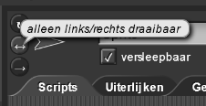
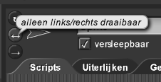
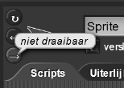
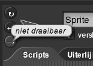

Op Maat Maken en Debuggen
Op deze pagina ga je de woordenlijsten die door de sprites gebruikt worden aanpassen en problemen debuggen.
- Open je H1L2-Kletspraat project. Pas deze drie functieblokken aan om de zinnen die het programma
gebruikt te veranderen. (Zie de uitleg hieronder.) Wees creatief en grappig, maar wel voorzichtig.


Hoe kun je een blok aanpassen
- Vind het blok in het werkblad of de gekleurde paletten aan de linkerkant.
- Control-klik (of rechts-klik) op het blok en kies "bewerken..."
- Verander de code in het blok (Instructies staan al binnen het blok.)
- Klik op OK als je klaar bent (Of klik op "Annuleren" als je niets wilt veranderen.)
We gebruiken de term debuggen voor het testen, vinden van problemen en het oplossen hiervan.
- Zorg er voor dat je programma goed werkt. Test elk blok afzonderlijk, en ook het gehele programma. Als iets niet goed werkt, ga dan niet door voordat je het probleem verholpen hebt.
- Zorg dat de sprites alleen kletsen als je erop klikt.
- Verander de achtergrond van het podium.
- Verander de uiterlijken naar iets wat je leuk vindt. Je kunt een foto of plaatje van het internet
halen door het plaatje naar het uiterlijk-werkveld van jouw sprite te slepen. Als het plaatje dat je gekozen hebt te groot is, stel de grootte dan in op minder dan 100% met gebruik van . Je wilt misschien ook de draaistijl van je sprite aanpassen met de knoppen in de linkerbovenhoek van je werkveld.

 
  
